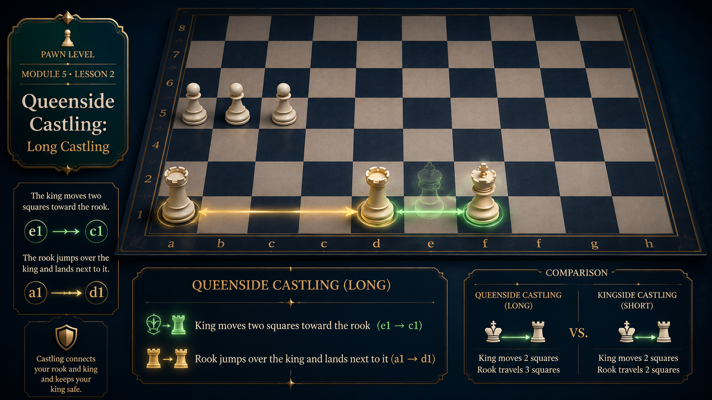

1
What Is Queenside Castling?
Queenside castling is the second type of castling. The king moves toward the queenside rook (the a-file rook).
White's king moves from e1 to c1, and the a1 rook moves from a1 to d1. For Black, the king moves from e8 to c8, and the a8 rook moves to d8.
Notation
Queenside castling is written as O-O-O (three Os with dashes).
2
The Move
Here is how queenside castling looks for White from the starting position.

3
Kingside vs Queenside
The main difference is which rook you use and where the king ends up.
- Kingside (O-O): King goes to g1/g8. Rook goes to f1/f8. The king is closer to the edge.
- Queenside (O-O-O): King goes to c1/c8. Rook goes to d1/d8. The king is closer to the center.
- In queenside castling, the king moves three squares, not two. The rook moves two squares.
Both types of castling are useful. Choose based on which side is safer for your king.
✓
Review Questions
Use these questions to check understanding.
In queenside castling, where does the White king move to?
From e1 to c1.
What is the notation for queenside castling?
O-O-O.
What is the main difference between kingside and queenside castling?
Which rook is used and where the king ends up. Queenside uses the a-file rook and the king ends on c1/c8.